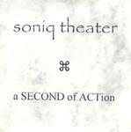

| Artist: | Soniq Theater |
| Title: | A Second Of Action |
| Label: | self produced |
| Length(s): | 57 minutes |
| Year(s) of release: | 2002 |
| Month of review: | [03/2003] |
| 1) | The Gold Rush | 7.14 |
| 2) | Elephant Race | 4.01 |
| 3) | Marakanda | 4.04 |
| 4) | Centaurus | 5.14 |
| 5) | Way To Karakorum | 4.06 |
| 6) | Transsiberian Railroad | 4.05 |
| 7) | Seventh Crusade | 5.01 |
| 8) | Nocturno | 1.56 |
| 9) | Halcyon Days | 6.24 |
| 10) | Gulliver's Travels | 6.32 |
| 11) | Bon Voyage | 3.58 |
| 12) | Phoenix | 4.55 |
Elephant Race is indeed a pacey piece, although it does not contain the thunderous drumming of elephant feet that you might expect here. This is in fact a rather light piece with catchy melody lines and comparable with an up-beat version of eighties Tangerine Dream (Optical Race). Although I myself am not that fond of Optical Race itself, this is quite nice, and the incidental organ does warm up the track. Notwithstanding the pace this is certainly a more electronic track.
Melodically, an Arabic feel pervades Marakanda, which has female vocal wailings (and scattings) and electronic brass. Again, the Optical Race feel is close by, the electronics are very precise and clear, which also brings in the danger of syntheticness. After a pianic beginning, Centaurus turns out to have some remarkable dark and tense parts with double bass like electronic drums. Played by a band, I suppose this would be progmetal. Well, except for the melodic pianic passages then. The middle part is dominated by some extensive keyboard soloing. The sense to the song is to me a little less clear here, the parts are a bit too different. The song ends on a classical footing.
Next up is Way To Karakorum with harpsichorish sounds. The melodicity and the sound of this song is again reminiscent of Bjorn Lynne on his Wolves Of The Gods album. There is a certainly feel about the song, that makes you think it tells some kind of story, a certain filmicness.
Transsiberian Railroad is a bit of a hop along, plump and plodding. A rather boring tune in my book. A bit too frolic and melodically not very enticing. Seventh Crusade has a New Agey opening, continuing with an intensifying build up. The guitar samples are again in evidence and the song has a strong drive. Brassy swinging keyboards set in later, the drive continues to be strong, except in the middle with its domineering keyboard solo's. Electronic rock. Very synthetic but the drive is there which is important. Nocturno is a short one, with harpsichordish synths playing a good somewhat melancholy melody. Halcyon Days is a rather strange one packing many influences. At times, we hear a pure rock influence, organ passages, the song starts in Arena style, but it also contains some synthy strings as well as dark atmospheric interludes. Maybe a bit of Alan Parsons Project there as well. A smorgasbord, but all revolving around a central theme.
Gulliver's Travels is a bit in the line of the previous track, but also has its dreamy key bits. Melodically, this is again a fine track. Plenty of variation, sometimes a bit too much. The keyboards sometimes have a strongly modern feel, sometimes the organ rips out. We can have it both ways.
We are near the end with the opening piano runs of Bon Voyage. This is a rather easy going one. A rather monotonous and light affair. Phoenix was dedicated the victims of the World Trade Center affair. It is mainly in the line of the previous with rather sharp synth sounds, but also some more laid back passages. It is not particularly a lament.